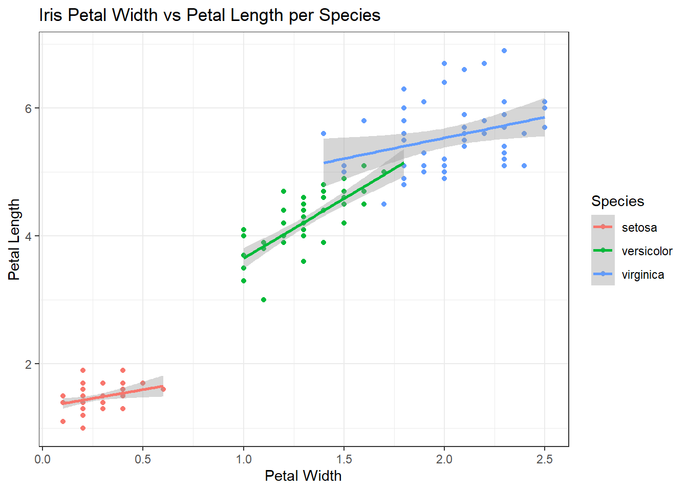
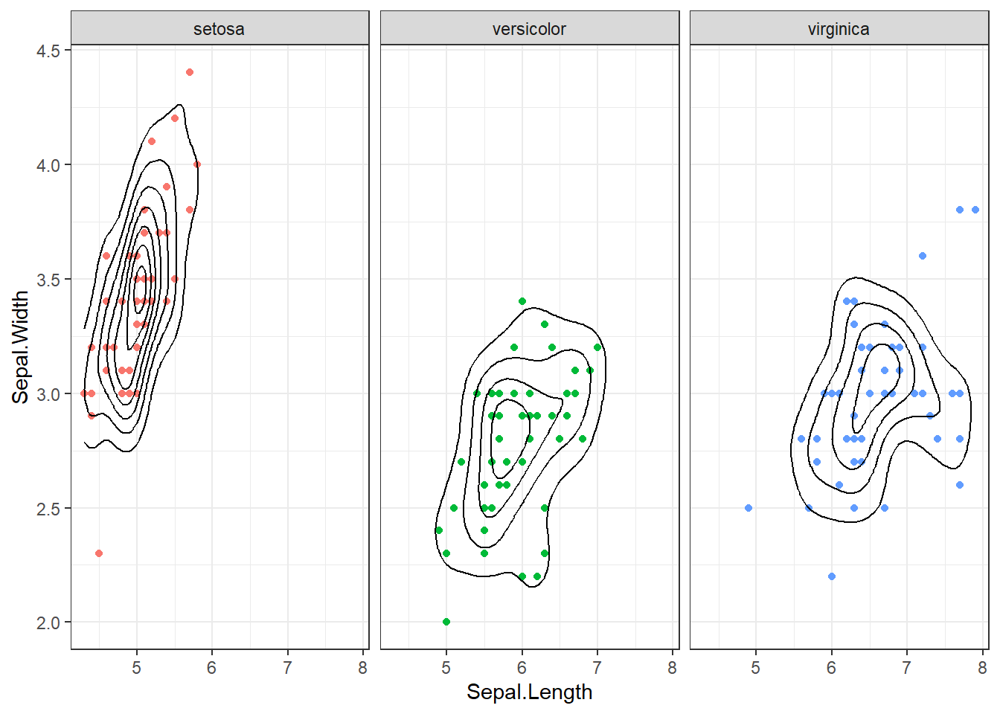
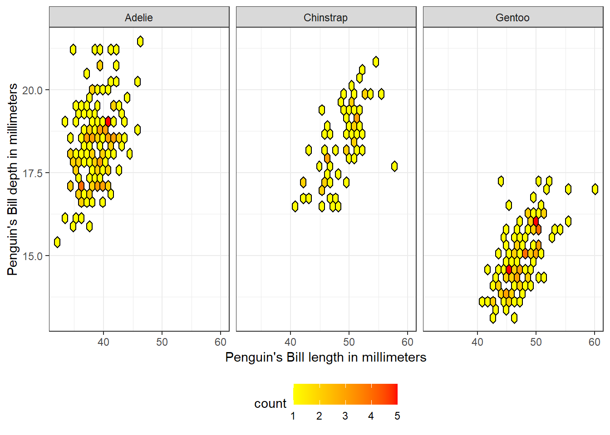
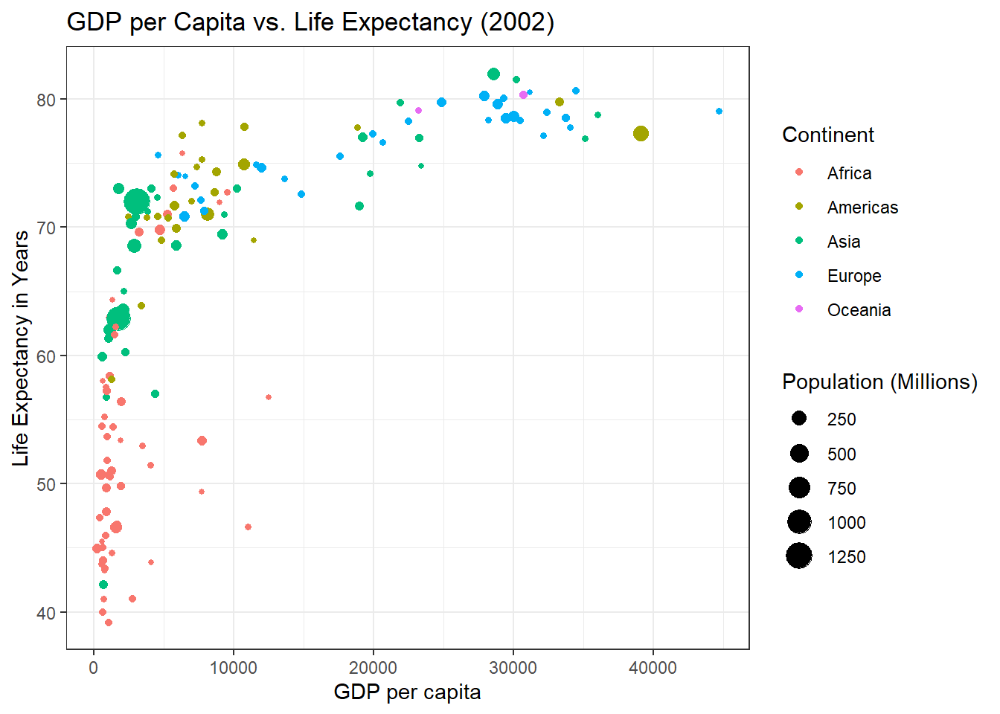
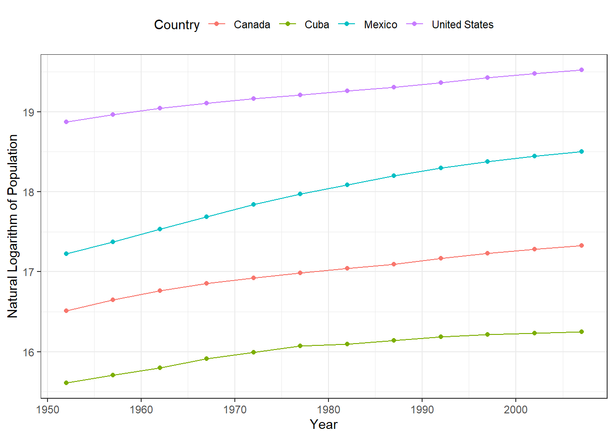

library(ggplot2)Visualization_ggplot2
Graphing in R
This document showcases different types of visualizations created using ggplot2 and hexbin in R. The datasets used include the iris, palmerpenguins, and gapminder datasets. Each visualization is accompanied by a brief description explaining its purpose and insights.
1. Iris Dataset: Scatter Plot with Linear Regression
This plot visualizes the relationship between petal width and petal length for three species of iris flowers. A linear regression line is added to observe trends within each species.
theme_set(theme_bw())
ggplot(
data = iris,
mapping = aes(x = Petal.Width, y = Petal.Length, color = Species)
) +
geom_point() +
geom_smooth(method = "lm") +
labs(title = "Iris Petal Width vs Petal Length per Species",
x = "Petal Width", y = "Petal Length")`geom_smooth()` using formula = 'y ~ x'
2. Iris Dataset: Density Plot
A density contour plot is used to observe the distribution of sepal length and width. Each plot is faceted by species for comparison, with a black contour representing the overall density.
set.seed(1)
iris |>
ggplot(aes(x = Sepal.Length,
y = Sepal.Width)) +
geom_point(aes(color = Species)) + #point colors by species
geom_density2d(color = "black")+ #all desnity graphs black
facet_wrap(~Species) + #3 graphs
theme(legend.position = "none")
3. Palmer Penguins Dataset: Hexbin Plot
This plot visualizes the relationship between bill length and bill depth for three penguin species. Hexagonal bins provide an effective representation of data density, with a gradient color scale to highlight high-density areas.
library(hexbin)
library(palmerpenguins)
ggplot(penguins, aes(x = bill_length_mm, y = bill_depth_mm)) +
geom_hex(color = "black") + #shape and color
scale_fill_gradient(low = "yellow", high = "red") + #gradient
facet_wrap(~species) + #3 graphs
labs(x = "Penguin's Bill length in millimeters", y = "Penguin's Bill depth in millimeters") +
theme(legend.position = "bottom") #legend at the bottom
4. Gapminder Dataset: GDP vs Life Expectancy
This bubble plot compares GDP per capita and life expectancy for different continents in the year 2002. The size of the points represents the population in millions.
library(dplyr)
Attaching package: 'dplyr'The following objects are masked from 'package:stats':
filter, lagThe following objects are masked from 'package:base':
intersect, setdiff, setequal, unionlibrary(gapminder)
gap <- gapminder |> filter(year == 2002) |>
mutate(pop_mil = pop / 1e6) #convert population to millions
ggplot(gap, aes(x = gdpPercap, y = lifeExp)) +
geom_point(aes(color = continent, size = pop_mil)) +
labs(title = "GDP per Capita vs. Life Expectancy (2002)",
x = "GDP per capita", y = "Life Expectancy in Years",
size = "Population (Millions)",
color = "Continent") +
guides(color = guide_legend(order = 1),
size = guide_legend(order = 2)) #legend oreder
5. Gapminder Dataset: Population Growth in North America
This line and point plot tracks the population growth (log-transformed) of four North American countries over time. Using a logarithmic scale makes it easier to compare growth trends across different population sizes.
gap2 <- gapminder %>% filter(country %in% c("Canada", "Cuba", "Mexico", "United States"))
ggplot(gap2, aes(x = year, y = log(pop))) +
geom_point(aes(color = country)) +
geom_line(aes(color = country)) +
theme(legend.position = "top") +
labs(y = "Natural Logarithm of Population",
color = "Country",
x = "Year")